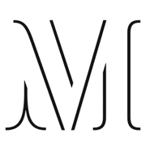

MY STORY
I started in customer support. Curiosity took me into technical support, and technical depth led me to Support Operations. Today I build the systems that help support teams investigate faster, capture better signals, and scale what works.
How I got here
I am a Senior Support Professional focused on Support Operations, technical systems, and AI-native workflows. I work at the intersection of customers, Engineering, and Product, investigating complex technical issues, improving the systems behind support, and turning recurring problems into processes that scale.
Today, I work autonomously as the sole EMEA support engineer at Stack Overflow, owning the full ticket lifecycle across 100+ enterprise accounts, including P1 and P2 incidents. But the part of the job I find most interesting happens after the ticket is solved: understanding why the problem happened, spotting the pattern, and figuring out how to make sure the same problem is easier to solve next time.
At Alida, I built my first customer feedback pipeline. When I spotted a pattern, I did not just flag it. I built a process that made sure the insight reached Engineering and Product. I found the same gap when I moved to Stack Overflow, so I built the process again from scratch.
That is the thread running through my work. I see support problems as systems problems. A recurring escalation might point to a documentation gap. A stream of feature requests might reveal a product pattern. A slow investigation might mean the right observability or reproduction workflow does not exist yet.
When I find those gaps, I like building the thing that fills them. Datadog dashboards, escalation playbooks, knowledge base infrastructure, feedback workflows, and now AI-native tools. The goal is not simply to make my own work easier. It is to create a better system that keeps working after the original ticket is closed.
From support to systems
"I became technical because I wanted to understand support problems deeply. That led me to realise I could build the systems that prevent and solve those problems at scale."
API debugging, authentication, SSO, logs, observability, reproduction and root cause analysis.
Turn recurring issues into workflows, documentation, escalation paths and operational processes.
Use AI and software to move repetitive support work from manual handling toward scalable pipelines.
Bring customer signals to Product and Engineering so support becomes a source of product intelligence.
What I build now
I am increasingly interested in what happens when support becomes an operational intelligence layer for the company.
I have started building AI-native systems around the problems I see firsthand. Feedback Loop turns support requests into prioritised product insight. Support Ticket Analyser identifies documentation gaps and turns them into knowledge-base content.
These are not just side projects. They are experiments in how Support Operations can use AI to improve triage, knowledge management, customer feedback, and the connection between support, Product, and Engineering.
I build with tools such as Cursor, the Anthropic API, Cloudflare Workers, JavaScript, Datadog, REST APIs and the systems I already use in enterprise support.
Where I am heading
I am looking to work with teams where Support Operations is treated as a systems problem.
That means building better workflows, automation, documentation, escalation infrastructure and AI-powered tools that allow support organisations to scale without losing technical depth or customer empathy.
I am particularly interested in AI-native and developer-focused companies where Support sits close to Product and Engineering, and where there is room to question how things are done and build something better.
Beyond work
Every year during Ramadan, I lead a fundraising project that has raised over £50,000 and distributed 2,000 food bags to families in Pakistan. It started small and grew because I kept improving it: better outreach, better logistics, better follow-through. The same instinct that makes me build better support systems is what makes this work.
Career journey
Works autonomously across the full EMEA ticket lifecycle and owns P1/P2 escalation management across 100+ enterprise accounts. Built customer feedback workflows, Datadog observability dashboards, knowledge base infrastructure and escalation playbooks to connect support signals with Product and Engineering.
Managed enterprise escalations across SSO, SAML, OAuth and REST APIs. Built structured bug reporting and customer feedback processes that improved Engineering handoffs and reduced repeat customer issues through better documentation.

Managed high-volume customer interactions across phone, email and chat. Built reusable support templates and resolved complex escalations through cross-functional collaboration.
Handled 50+ inbound calls daily during high-volume pandemic operations, resolving issues with empathy and clear communication in a high-pressure environment.
Ask me anything